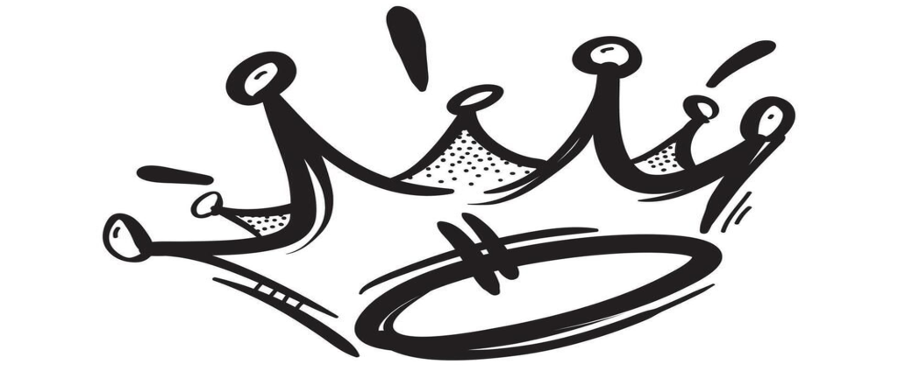

Me llamo Erick, aunque muchos me conocen simplemente como Snorik. Llevo más de 4 años desarrollando videojuegos y explorando el mundo del Game Development, donde he aprendido a combinar la creatividad con la lógica para dar vida a experiencias interactivas únicas.
Además, trabajo como Backend Developer, construyendo sistemas sólidos, escalables y eficientes que impulsan aplicaciones y juegos desde su núcleo. También soy diseñador gráfico, lo que me permite unir la parte técnica con la visual y crear proyectos completos desde la idea hasta su ejecución final.
Mi objetivo es seguir creciendo como desarrollador y aportar a la comunidad hispana compartiendo conocimiento, ayudando a otros a mejorar su empleabilidad y acercando el desarrollo de software a más personas de forma accesible y creativa.
Experiencia laboral
Automatizacion de servicios N8N
Grid-Code
15/10/25 - 31/12/25
Desarrollé automatizaciones backend para Grid Code, integrando APIs y flujos inteligentes con n8n, ChatGPT y Gemini, además de administrar y mantener servidores VPS con Docker.
Proyectos

SECKING
Python
SecKing es un bot de seguridad de IA para servidores de Discord, capaz de detectar mensajes inapropiados, ataques, imágenes y comportamientos no deseados.